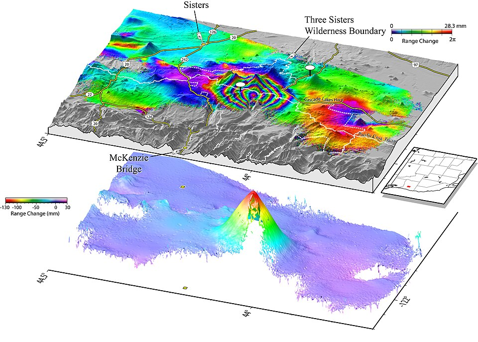

Volcanism is the surface expression of the Earth's internal heat engine: the transfer of mass and energy from the mantle and crust to the surface, the oceans and the atmosphere. About 1,300–1,400 volcanoes are known to have erupted during the Holocene (the last ~11,700 years), according to the Smithsonian Institution's Global Volcanism Program; larger counts of roughly 1,500 "active" volcanoes include centres whose recent activity is less certain, and the great majority of submarine volcanoes on the mid-ocean ridges are not counted at all. In a typical year some 50–70 volcanoes erupt, and on any given day roughly 20–45 eruptions are in progress.
Volcanic hazards are unusual among natural hazards in three respects. First, they are extraordinarily diverse: a single eruption can produce lava flows, pyroclastic density currents, tephra fall, ballistic blocks, lahars, debris avalanches, tsunamis, toxic gases and, at the largest scales, global climate perturbation. Second, they span an enormous range of magnitude — erupted volumes range over about nine orders of magnitude, from small lava fountains of a few thousand cubic metres to "super-eruptions" exceeding 1,000 km³. Third, unlike earthquakes, most eruptions are preceded by measurable unrest: magma must physically move towards the surface, and in doing so it fractures rock, deforms the ground and releases gas. Volcanology is therefore one of the few hazard sciences in which short-term forecasting is routinely possible, although it remains probabilistic and frequently ambiguous.
The historical record compiled by Auker et al. (2013) lists roughly 280,000 volcanic fatalities between 1600 and 2010, dominated by a handful of catastrophes (Tambora 1815, Krakatau 1883, Mont Pelée 1902, Nevado del Ruiz 1985, Laki 1783). Around 800 million people are estimated to live within 100 km of a Holocene volcano, concentrated in Indonesia, the Philippines, Japan, Central America, the Andes, East Africa and Italy. Aviation, global supply chains and the climate system extend volcanic risk far beyond the immediate surroundings of a volcano.
This course treats volcanoes at a graduate level, following the chain from the generation of magma in the mantle, through its ascent, degassing and fragmentation, to the physics of eruption columns and hazardous flows, and finally to monitoring, forecasting, climate impacts, aviation and risk reduction. Each lesson pairs the governing physics with order-of-magnitude reasoning and worked exercises, and the course closes with eight case studies that illustrate how the science was learned — often at great cost.
In this course, you will:
- 1.Explain how decompression, flux and heat-transfer melting generate magma in different plate-tectonic settings, and estimate melting depths from simple solidus–adiabat models
- 2.Relate magma viscosity to composition, temperature, dissolved water and crystal content, and use simple flow laws to estimate lava velocities
- 3.Quantify volatile solubility, exsolution and vesiculation, and explain the main criteria for magma fragmentation
- 4.Classify eruption styles, and compute eruption magnitude, intensity and Volcanic Explosivity Index from erupted mass and duration
- 5.Apply buoyant-plume theory and empirical scaling to eruption columns, and explain the conditions for column collapse
- 6.Describe the physics and hazards of pyroclastic density currents, lahars, lava flows, tephra fall and volcanic gases
- 7.Interpret seismic, geodetic and gas monitoring data, and use simple source and forecasting models
- 8.Explain how volcanic sulfur alters stratospheric aerosol and climate, and estimate radiative forcing from aerosol optical depth
- 9.Evaluate the hazard of volcanic ash to aviation and the role of the Volcanic Ash Advisory Centres
- 10.Construct hazard maps and risk estimates, and evaluate lessons from historical eruptions for risk reduction
Figures


Contents
Plate Settings and Magma Genesis Lesson 2
Magma Rheology and Petrology Lesson 3
Volatiles, Vesiculation and Fragmentation Lesson 4
Eruption Styles and the Volcanic Explosivity Index Lesson 5
Eruption Columns and Plume Dynamics Lesson 6
Pyroclastic Density Currents, Lahars, Lava, Tephra and Gas Lesson 7
Monitoring and Forecasting Lesson 8
Volcanic Aerosols and Climate Lesson 9
Volcanic Ash and Aviation Lesson 10
Hazard Mapping and Risk Reduction Case Studies
8 major events analysed References
30 sources for further reading
Image sources
- Figure 1 · Pinatubo91eruption plume. By Dave Harlow, USGS. Public domain. From Wikimedia Commons: https://commons.wikimedia.org/wiki/File:Pinatubo91eruption_plume.jpg
- Figure 2 · InSAR Volcano. By C. W. Wicks Jr. et al., USGS. Public domain. From Wikimedia Commons: https://commons.wikimedia.org/wiki/File:InSAR_Volcano.jpg